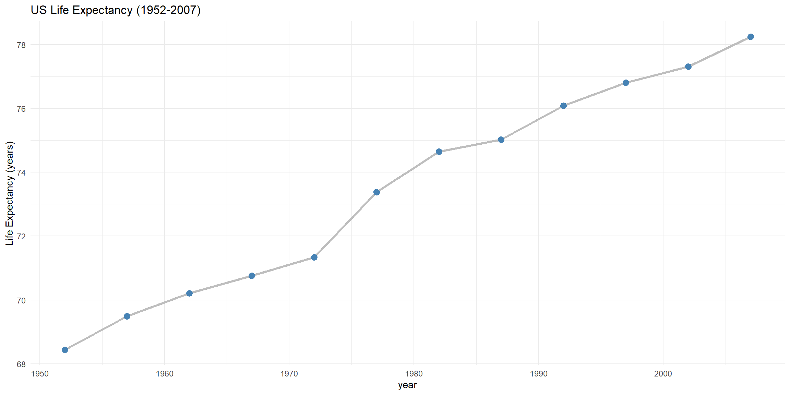
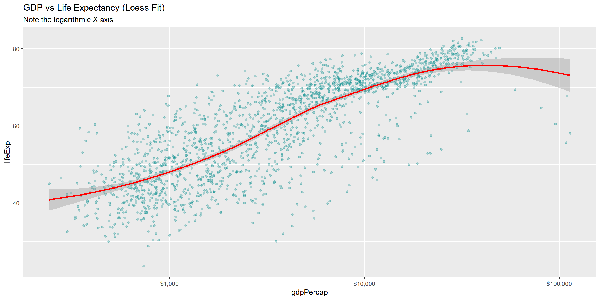
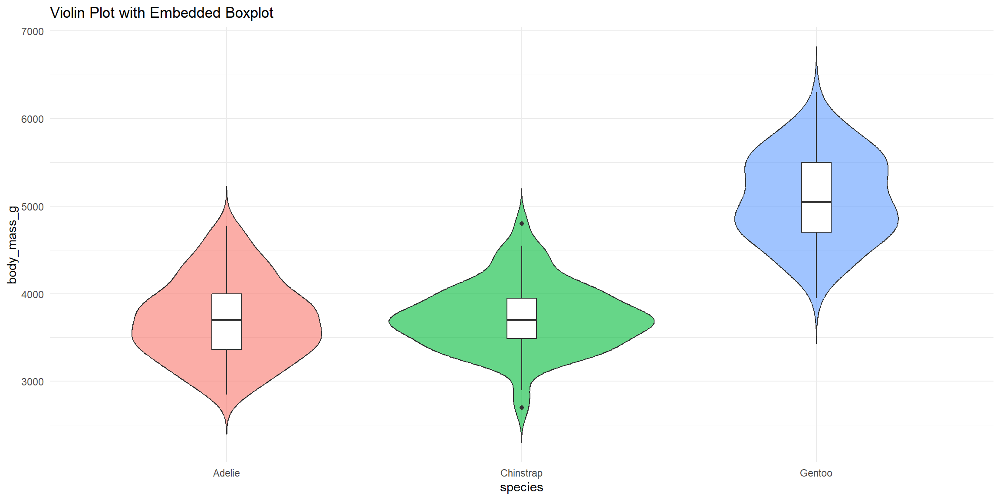
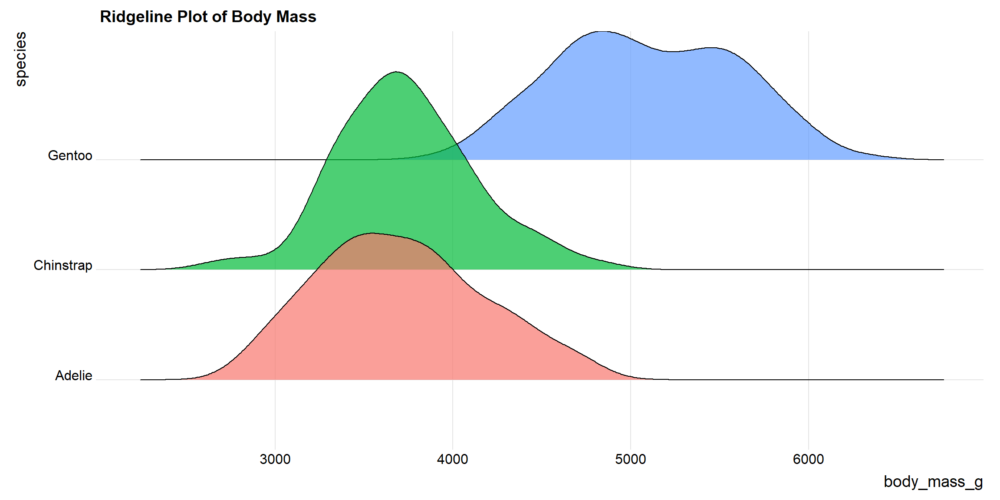
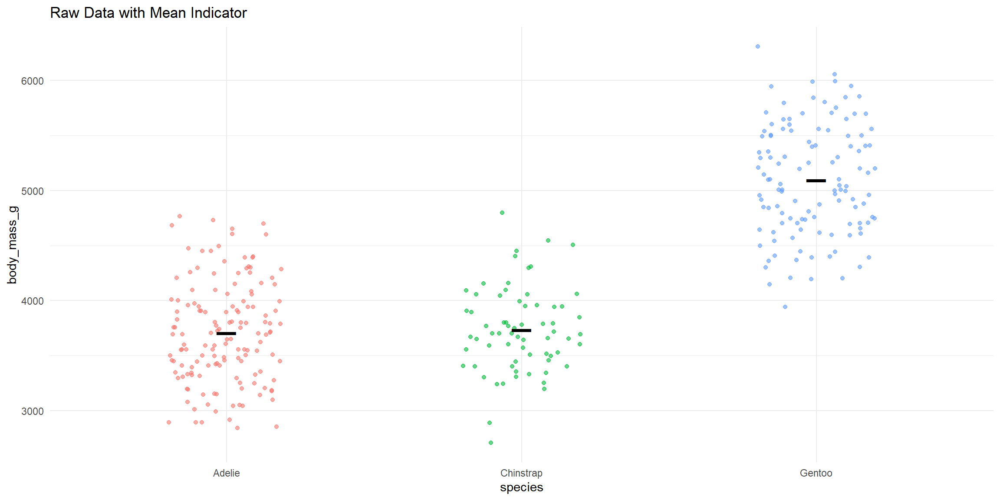
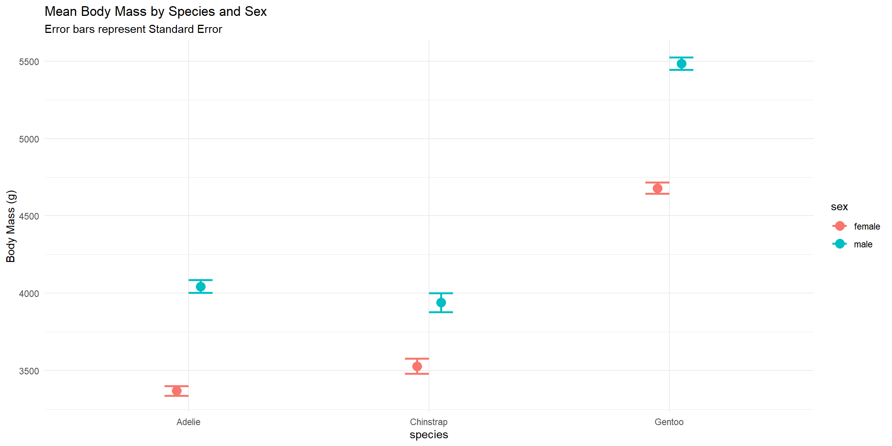
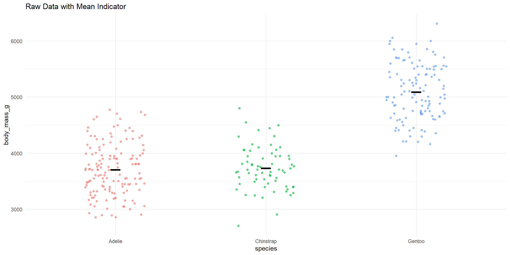
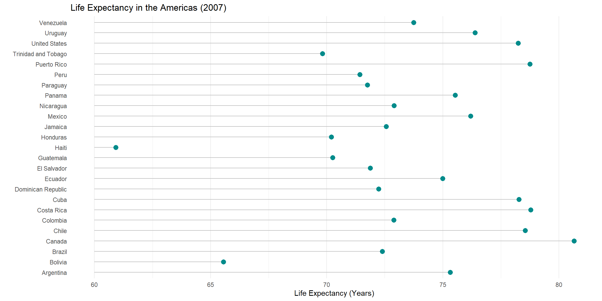

One of the most fundamental questions in data analysis is: “How does variable A relate to variable B?”
Bivariate analysis allows us to investigate relationships, correlations, and differences between groups. The specific type of graph you choose depends entirely on the data types you are working with (Categorical or Quantitative).
1. Categorical vs. Categorical
When both variables are categorical (e.g., “Species” and “Island”), we are essentially comparing counts or proportions. The most effective tools here are variants of the bar chart.
For this section, we will use the penguins dataset to explore the relationship between Island and Species.
1.1 Stacked Bar Charts
The default behavior of a bar chart in ggplot2 is to stack categories on top of one another. This gives you a sense of the total count while showing the breakdown of subgroups.
Code
```{r Data Penguins}library(ggplot2)```
Warning: package 'ggplot2' was built under R version 4.4.3
Code
```{r Data Penguins}library(palmerpenguins)```
Warning: package 'palmerpenguins' was built under R version 4.4.3
Code
```{r Data Penguins}penguins <- palmerpenguins::penguinspenguins <-na.omit(penguins)head(penguins)# Stacked bar chartggplot(penguins, aes(x = island, fill = species)) +geom_bar(position ="stack") +labs(title ="Species Distribution by Island (Stacked)")```
From this chart, we can quickly see that Biscoe island has the most penguins overall, and Torgersen island is exclusively inhabited by Adelie penguins.
1.2 Grouped Bar Charts
If you want to compare the specific counts of species side-by-side, the “dodged” bar chart is preferred. It un-stacks the bars and places them next to each other.
Code
```{r Penguins 1}# Grouped bar chartggplot(penguins, aes(x = island, fill = species)) +geom_bar(position ="dodge") +labs(title ="Species Distribution by Island (Grouped)")```
Note: By default, if a category has zero observations (like Chinstrap penguins on Biscoe), the bar is omitted, and the remaining bars expand to fill the space. If you want to preserve the width and show the gap, use position_dodge(preserve = "single").
1.3 Segmented (100% Fill) Bar Charts
Sometimes, raw counts matter less than percentages. If we want to know “What proportion of penguins on Dream Island are Chinstraps?”, we use the “fill” position. This stretches every bar to 100%.
Code
```{r Penguins 2}library(scales)```
Warning: package 'scales' was built under R version 4.4.3
Code
```{r Penguins 2}# Segmented bar chartggplot(penguins, aes(x = island, fill = species)) +geom_bar(position ="fill") +scale_y_continuous(labels = percent) +labs(y ="Proportion", title ="Species Proportion by Island") +theme_minimal()```
1.4 Adding Labels
A segmented bar chart is most effective when the actual percentages are written on the plot. To do this, we must first calculate the percentages manually using dplyr, and then plot the summary data.
Code
```{r Penguins 3}library(dplyr)```
Warning: package 'dplyr' was built under R version 4.4.3
Attaching package: 'dplyr'
The following objects are masked from 'package:stats':
filter, lag
The following objects are masked from 'package:base':
intersect, setdiff, setequal, union
Code
```{r Penguins 3}# 1. Create a summary table with labelsplotdata <- penguins %>%group_by(island, species) %>%summarize(n =n()) %>%mutate(pct = n /sum(n),lbl = scales::percent(pct, accuracy =1))```
`summarise()` has grouped output by 'island'. You can override using the
`.groups` argument.
Code
```{r Penguins 3}# 2. Plot using the summary dataggplot(plotdata, aes(x = island, y = pct, fill = species)) +# Use geom_col for pre-calculated datageom_col(position ="fill") +geom_text(aes(label = lbl), position =position_fill(vjust =0.5), color ="white", fontface ="bold") +scale_y_continuous(labels = percent) +labs(y ="Percent", title ="Species Composition by Island") +theme_minimal()```
2. Quantitative vs. Quantitative
When both variables are numeric (e.g., Flipper Length vs. Body Mass), we are looking for correlations or trends.
2.1 Scatterplots
The scatterplot is the standard for bivariate quantitative data. Let’s look at the relationship between Flipper Length and Body Mass.
Code
```{r Penguins 4}# Enhanced scatterplotggplot(penguins, aes(x = flipper_length_mm, y = body_mass_g)) +geom_point(color ="cornflowerblue", size =2, alpha =0.6) +labs(title ="Flipper Length vs. Body Mass",x ="Flipper Length (mm)",y ="Body Mass (g)") +theme_minimal()```
2.2 Adding Trend Lines
To summarize the relationship, we can add a trend line using geom_smooth().
Linear Fit
The most common approach is a straight linear regression line (method = "lm").
Code
```{r}ggplot(penguins, aes(x = flipper_length_mm, y = body_mass_g)) +geom_point(color ="cornflowerblue", alpha =0.6) +geom_smooth(method ="lm", color ="black", size =1) +labs(title ="Linear Relationship")```
Warning: Using `size` aesthetic for lines was deprecated in ggplot2 3.4.0.
ℹ Please use `linewidth` instead.
`geom_smooth()` using formula = 'y ~ x'

Polynomial and Loess Curves
Not all data is linear. Sometimes relationships curve.
Polynomial: Uses a formula (e.g., quadratic) to fit a curve.
Loess: A non-parametric method that follows the data locally. This is the default in ggplot2 for smaller datasets.
Let’s look at a different dataset, gapminder, to see a curved relationship between GDP per Capita and Life Expectancy.
Code
```{r}library(gapminder)```
Warning: package 'gapminder' was built under R version 4.4.3
Code
```{r}# Loess Curve (Standard Smoothing)ggplot(gapminder, aes(x = gdpPercap, y = lifeExp)) +geom_point(alpha =0.3, color ="darkcyan") +geom_smooth(method ="loess", color ="red") +scale_x_log10(labels = scales::dollar) +# Log scale helps visualize GDPlabs(title ="GDP vs Life Expectancy (Loess Fit)",subtitle ="Note the logarithmic X axis")```
`geom_smooth()` using formula = 'y ~ x'

2.3 Time Series (Line Plots)
If one of your quantitative variables is Time, a line plot is the standard choice. Below is the change in Life Expectancy in the United States over time.
Code
```{r}# Filter for US dataus_data <-filter(gapminder, country =="United States")# Line plot with pointsggplot(us_data, aes(x = year, y = lifeExp)) +geom_line(size =1.2, color ="grey") +geom_point(size =3, color ="steelblue") +labs(title ="US Life Expectancy (1952-2007)",y ="Life Expectancy (years)") +theme_minimal()```
3. Categorical vs. Quantitative
This is perhaps the most common analysis type: comparing a numerical value across different groups.
3.1 Bar Charts (Summary Statistics)
We can plot the Mean of a variable for each group. Here, we calculate the average body mass for each penguin species.
Code
```{r}# Calculate meansmean_data <- penguins %>%group_by(species) %>%summarize(mean_mass =mean(body_mass_g))# Plot meansggplot(mean_data, aes(x = species, y = mean_mass)) +geom_col(fill ="steelblue", width =0.7) +geom_text(aes(label =round(mean_mass, 0)), vjust =-0.5) +scale_y_continuous(limits =c(0, 6000)) +labs(title ="Average Body Mass by Species", y ="Mass (g)") +theme_minimal()```

Warning: Bar charts of means can be misleading because they hide the spread of the data. A species with highly variable weights looks the same as a species with consistent weights.
3.2 Distributions: Boxplots and Violins
To see the spread, we use distribution plots.
Boxplots
Boxplots summarize the distribution using quartiles. They show the median, the IQR (Interquartile Range), and outliers.
Code
```{r}ggplot(penguins, aes(x = species, y = body_mass_g, fill = species)) +geom_boxplot(alpha =0.6) +labs(title ="Body Mass Distribution by Species") +theme_minimal() +theme(legend.position ="none")```

Violin Plots
Violin plots show the “density” of the data. The wider the violin, the more data points exist at that value.
Code
```{r}ggplot(penguins, aes(x = species, y = body_mass_g, fill = species)) +geom_violin(trim =FALSE, alpha =0.6) +geom_boxplot(width =0.1, fill ="white") +# Add boxplot inside for referencelabs(title ="Violin Plot with Embedded Boxplot") +theme_minimal() +theme(legend.position ="none")```
3.3 Ridgeline Plots
Ridgeline plots (or “Joyplots”) are excellent when you have many categories. They display density curves stacked vertically.
Code
```{r}library(ggridges)```
Warning: package 'ggridges' was built under R version 4.4.3
Code
```{r}ggplot(penguins, aes(x = body_mass_g, y = species, fill = species)) +geom_density_ridges(alpha =0.7) +labs(title ="Ridgeline Plot of Body Mass") +theme_ridges() +theme(legend.position ="none")```
Picking joint bandwidth of 153

3.4 Mean with Error Bars
Scientific publications often require plots showing the Mean +/- the Standard Error (SEM) or Confidence Interval.
`summarise()` has grouped output by 'species'. You can override using the
`.groups` argument.
Code
```{r}# Plot Mean +/- SEpd <-position_dodge(0.2) # To separate overlapping barsggplot(summary_stats, aes(x = species, y = mean, color = sex, group = sex)) +geom_point(position = pd, size =4) +geom_errorbar(aes(ymin = mean - se, ymax = mean + se), width =0.2, position = pd, size =1) +labs(title ="Mean Body Mass by Species and Sex",subtitle ="Error bars represent Standard Error",y ="Body Mass (g)") +theme_minimal()```

3.5 Jitter and Strip Plots
If your dataset isn’t massive, the most honest way to show the data is to show all the points. To prevent points from overlapping, we “jitter” them (add random noise).
Code
```{r}ggplot(penguins, aes(x = species, y = body_mass_g, color = species)) +geom_jitter(width =0.2, alpha =0.6) +stat_summary(fun = mean, geom ="point", shape =95, size =10, color ="black") +# Add mean barlabs(title ="Raw Data with Mean Indicator") +theme_minimal() +theme(legend.position ="none")```

3.6 Cleveland Dot Plots (Lollipop Charts)
When comparing a numeric value across many categories (like countries), a bar chart becomes cluttered. A Cleveland dot plot (or lollipop chart) is a cleaner alternative.
Let’s look at Life Expectancy in the Americas in 2007.
Code
```{r}# Prepare dataamericas <- gapminder %>%filter(continent =="Americas"& year ==2007)# Lollipop Chartggplot(americas, aes(x = lifeExp, y =reorder(country, lifeExp))) +geom_segment(aes(x =60, xend = lifeExp, y = country, yend = country), color ="grey") +geom_point(size =3, color ="darkcyan") +labs(title ="Life Expectancy in the Americas (2007)",x ="Life Expectancy (Years)", y ="") +theme_minimal() +theme(panel.grid.major.y =element_blank()) # Remove horizontal grid lines for clarity```

Source Code
---title: "Visualizing Bivariate Data"format: html: fig-width: 12 fig-height: 6 code-fold: show code-tools: true code-block-bg: true code-block-border-left: "#31BAE9" toc: true code-copy: true number_sections: true echo: fenced---One of the most fundamental questions in data analysis is: "How does variable A relate to variable B?"Bivariate analysis allows us to investigate relationships, correlations, and differences between groups. The specific type of graph you choose depends entirely on the data types you are working with (Categorical or Quantitative).# 1. Categorical vs. CategoricalWhen both variables are categorical (e.g., "Species" and "Island"), we are essentially comparing counts or proportions. The most effective tools here are variants of the bar chart.For this section, we will use the `penguins` dataset to explore the relationship between **Island** and **Species**.## 1.1 Stacked Bar ChartsThe default behavior of a bar chart in `ggplot2` is to stack categories on top of one another. This gives you a sense of the total count while showing the breakdown of subgroups.```{r Data Penguins}library(ggplot2)library(palmerpenguins)penguins <- palmerpenguins::penguinspenguins <-na.omit(penguins)head(penguins)# Stacked bar chartggplot(penguins, aes(x = island, fill = species)) +geom_bar(position ="stack") +labs(title ="Species Distribution by Island (Stacked)")```From this chart, we can quickly see that Biscoe island has the most penguins overall, and Torgersen island is exclusively inhabited by Adelie penguins.## 1.2 Grouped Bar ChartsIf you want to compare the specific counts of species side-by-side, the "dodged" bar chart is preferred. It un-stacks the bars and places them next to each other.```{r Penguins 1}# Grouped bar chartggplot(penguins, aes(x = island, fill = species)) +geom_bar(position ="dodge") +labs(title ="Species Distribution by Island (Grouped)")```**Note:** By default, if a category has zero observations (like Chinstrap penguins on Biscoe), the bar is omitted, and the remaining bars expand to fill the space. If you want to preserve the width and show the gap, use `position_dodge(preserve = "single")`.## 1.3 Segmented (100% Fill) Bar ChartsSometimes, raw counts matter less than percentages. If we want to know "What proportion of penguins on Dream Island are Chinstraps?", we use the "fill" position. This stretches every bar to 100%.```{r Penguins 2}library(scales)# Segmented bar chartggplot(penguins, aes(x = island, fill = species)) +geom_bar(position ="fill") +scale_y_continuous(labels = percent) +labs(y ="Proportion", title ="Species Proportion by Island") +theme_minimal()```## 1.4 Adding LabelsA segmented bar chart is most effective when the actual percentages are written on the plot. To do this, we must first calculate the percentages manually using `dplyr`, and then plot the summary data.```{r Penguins 3}library(dplyr)# 1. Create a summary table with labelsplotdata <- penguins %>%group_by(island, species) %>%summarize(n =n()) %>%mutate(pct = n /sum(n),lbl = scales::percent(pct, accuracy =1))# 2. Plot using the summary dataggplot(plotdata, aes(x = island, y = pct, fill = species)) +# Use geom_col for pre-calculated datageom_col(position ="fill") +geom_text(aes(label = lbl), position =position_fill(vjust =0.5), color ="white", fontface ="bold") +scale_y_continuous(labels = percent) +labs(y ="Percent", title ="Species Composition by Island") +theme_minimal()```# 2. Quantitative vs. QuantitativeWhen both variables are numeric (e.g., Flipper Length vs. Body Mass), we are looking for correlations or trends.## 2.1 ScatterplotsThe scatterplot is the standard for bivariate quantitative data. Let's look at the relationship between **Flipper Length** and **Body Mass**.```{r Penguins 4}# Enhanced scatterplotggplot(penguins, aes(x = flipper_length_mm, y = body_mass_g)) +geom_point(color ="cornflowerblue", size =2, alpha =0.6) +labs(title ="Flipper Length vs. Body Mass",x ="Flipper Length (mm)",y ="Body Mass (g)") +theme_minimal()```## 2.2 Adding Trend LinesTo summarize the relationship, we can add a trend line using `geom_smooth()`.### Linear FitThe most common approach is a straight linear regression line (`method = "lm"`).```{r}ggplot(penguins, aes(x = flipper_length_mm, y = body_mass_g)) +geom_point(color ="cornflowerblue", alpha =0.6) +geom_smooth(method ="lm", color ="black", size =1) +labs(title ="Linear Relationship")```### Polynomial and Loess CurvesNot all data is linear. Sometimes relationships curve.* **Polynomial:** Uses a formula (e.g., quadratic) to fit a curve.* **Loess:** A non-parametric method that follows the data locally. This is the default in `ggplot2` for smaller datasets.Let's look at a different dataset, `gapminder`, to see a curved relationship between **GDP per Capita** and **Life Expectancy**.```{r}library(gapminder)# Loess Curve (Standard Smoothing)ggplot(gapminder, aes(x = gdpPercap, y = lifeExp)) +geom_point(alpha =0.3, color ="darkcyan") +geom_smooth(method ="loess", color ="red") +scale_x_log10(labels = scales::dollar) +# Log scale helps visualize GDPlabs(title ="GDP vs Life Expectancy (Loess Fit)",subtitle ="Note the logarithmic X axis")```## 2.3 Time Series (Line Plots)If one of your quantitative variables is **Time**, a line plot is the standard choice. Below is the change in Life Expectancy in the United States over time.```{r}# Filter for US dataus_data <-filter(gapminder, country =="United States")# Line plot with pointsggplot(us_data, aes(x = year, y = lifeExp)) +geom_line(size =1.2, color ="grey") +geom_point(size =3, color ="steelblue") +labs(title ="US Life Expectancy (1952-2007)",y ="Life Expectancy (years)") +theme_minimal()```# 3. Categorical vs. QuantitativeThis is perhaps the most common analysis type: comparing a numerical value across different groups.## 3.1 Bar Charts (Summary Statistics)We can plot the **Mean** of a variable for each group. Here, we calculate the average body mass for each penguin species.```{r}# Calculate meansmean_data <- penguins %>%group_by(species) %>%summarize(mean_mass =mean(body_mass_g))# Plot meansggplot(mean_data, aes(x = species, y = mean_mass)) +geom_col(fill ="steelblue", width =0.7) +geom_text(aes(label =round(mean_mass, 0)), vjust =-0.5) +scale_y_continuous(limits =c(0, 6000)) +labs(title ="Average Body Mass by Species", y ="Mass (g)") +theme_minimal()```**Warning:** Bar charts of means can be misleading because they hide the spread of the data. A species with highly variable weights looks the same as a species with consistent weights.## 3.2 Distributions: Boxplots and ViolinsTo see the spread, we use distribution plots.### BoxplotsBoxplots summarize the distribution using quartiles. They show the median, the IQR (Interquartile Range), and outliers.```{r}ggplot(penguins, aes(x = species, y = body_mass_g, fill = species)) +geom_boxplot(alpha =0.6) +labs(title ="Body Mass Distribution by Species") +theme_minimal() +theme(legend.position ="none")```### Violin PlotsViolin plots show the "density" of the data. The wider the violin, the more data points exist at that value.```{r}ggplot(penguins, aes(x = species, y = body_mass_g, fill = species)) +geom_violin(trim =FALSE, alpha =0.6) +geom_boxplot(width =0.1, fill ="white") +# Add boxplot inside for referencelabs(title ="Violin Plot with Embedded Boxplot") +theme_minimal() +theme(legend.position ="none")```## 3.3 Ridgeline PlotsRidgeline plots (or "Joyplots") are excellent when you have many categories. They display density curves stacked vertically.```{r}library(ggridges)ggplot(penguins, aes(x = body_mass_g, y = species, fill = species)) +geom_density_ridges(alpha =0.7) +labs(title ="Ridgeline Plot of Body Mass") +theme_ridges() +theme(legend.position ="none")```## 3.4 Mean with Error BarsScientific publications often require plots showing the Mean +/- the Standard Error (SEM) or Confidence Interval.```{r}# Calculate statssummary_stats <- penguins %>%group_by(species, sex) %>%summarize(n =n(),mean =mean(body_mass_g),sd =sd(body_mass_g),se = sd /sqrt(n) )# Plot Mean +/- SEpd <-position_dodge(0.2) # To separate overlapping barsggplot(summary_stats, aes(x = species, y = mean, color = sex, group = sex)) +geom_point(position = pd, size =4) +geom_errorbar(aes(ymin = mean - se, ymax = mean + se), width =0.2, position = pd, size =1) +labs(title ="Mean Body Mass by Species and Sex",subtitle ="Error bars represent Standard Error",y ="Body Mass (g)") +theme_minimal()```## 3.5 Jitter and Strip PlotsIf your dataset isn't massive, the most honest way to show the data is to show **all** the points. To prevent points from overlapping, we "jitter" them (add random noise).```{r}ggplot(penguins, aes(x = species, y = body_mass_g, color = species)) +geom_jitter(width =0.2, alpha =0.6) +stat_summary(fun = mean, geom ="point", shape =95, size =10, color ="black") +# Add mean barlabs(title ="Raw Data with Mean Indicator") +theme_minimal() +theme(legend.position ="none")```## 3.6 Cleveland Dot Plots (Lollipop Charts)When comparing a numeric value across many categories (like countries), a bar chart becomes cluttered. A Cleveland dot plot (or lollipop chart) is a cleaner alternative.Let's look at Life Expectancy in the Americas in 2007.```{r}# Prepare dataamericas <- gapminder %>%filter(continent =="Americas"& year ==2007)# Lollipop Chartggplot(americas, aes(x = lifeExp, y =reorder(country, lifeExp))) +geom_segment(aes(x =60, xend = lifeExp, y = country, yend = country), color ="grey") +geom_point(size =3, color ="darkcyan") +labs(title ="Life Expectancy in the Americas (2007)",x ="Life Expectancy (Years)", y ="") +theme_minimal() +theme(panel.grid.major.y =element_blank()) # Remove horizontal grid lines for clarity```